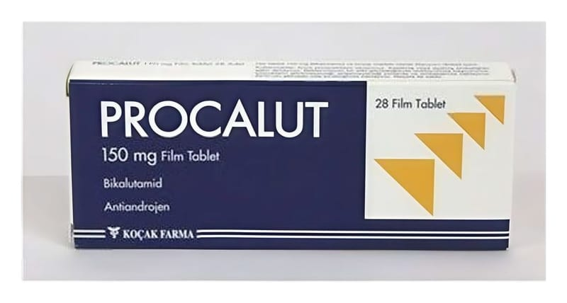

Procalut 150 mg Film Tablet, 28 Adet

Ne için kullanılır
KT · Bölüm 1PROCALUT, karton kutu içerisinde, 28 film kaplı tablet içeren blisterler ve kullanma talimatı ile kullanıma sunulmaktadır.
PROCALUT, bikalutamid adı verilen bir ilaç içerir. Bu ilaç “anti-androjenler” adı verilen bir ilaç grubuna dahildir.
• PROCALUT, prostat kanserinin tedavisinde kullanılır. • Testosteron gibi erkeklik hormonlarının etkilerini engelleyerek çalışır.